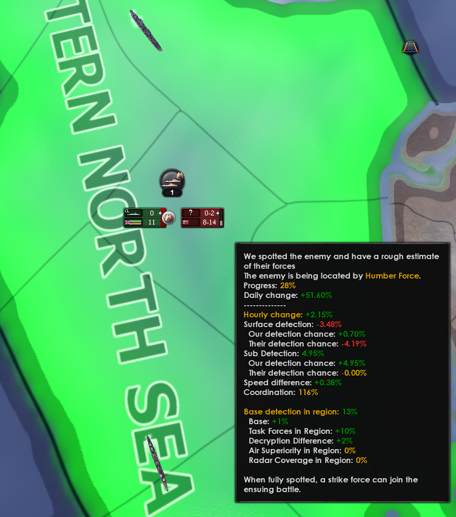
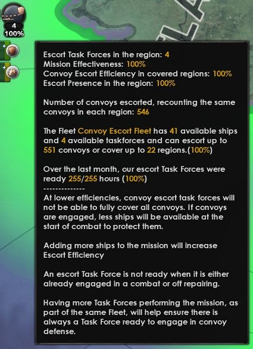
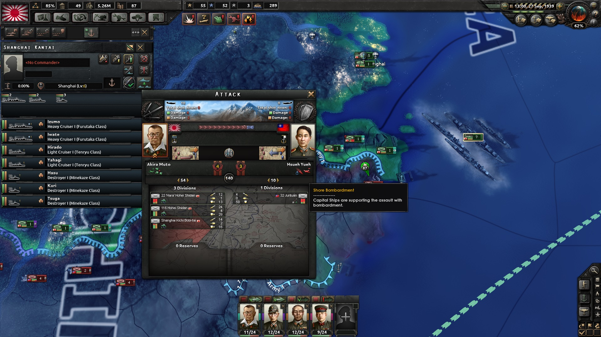

海军任务
原页面：Naval missions
可以给特遣舰队指派海军任务，以决定它们的行为。每个任务都有对应的快捷键。
虽然任务是在特遣舰队一级指派的，但任务的活动区域是在舰队一级通过分配区域来确定的。
当特遣舰队在其舰队所分配的区域中执行任务时，这些战略地区的中央都会显示一个图标。该图标表示正在执行的任务。图标下方有一个数字，表示在此区域执行该任务的特遣舰队数量。将光标移到这个数字上，就会出现一个提示框，提供关于该任务的更多信息。
 被指派执行海军演习任务的特遣舰队，会在最接近的港口相邻区域进行演习。舰船执行此任务期间会持续获得海军经验。
被指派执行海军演习任务的特遣舰队，会在最接近的港口相邻区域进行演习。舰船执行此任务期间会持续获得海军经验。
执行此任务的舰船将：
巡逻

 被指派执行巡逻任务的特遣舰队会搜寻敌方舰船。一支特遣舰队一次只能巡逻一个战略地区，因此巡逻多个地区需要多支特遣舰队。
被指派执行巡逻任务的特遣舰队会搜寻敌方舰船。一支特遣舰队一次只能巡逻一个战略地区，因此巡逻多个地区需要多支特遣舰队。
发现敌方舰船后，执行巡逻的特遣舰队会逐步收集有关敌方舰队的情报。这一过程称为发现，其进度以百分比表示，可在提示框中查看。当敌方舰队被 100% 发现时，就可以与其交战。
发现
发现进度从基础发现几率开始，并按每小时变化递增，直到达到 100%。如果每小时变化为零或负值，特遣舰队就无法发现该敌人。巡逻只能以如下概率开始发现敌方潜艇部队：[2]
hourly spotting chance=5\%· (2· hourly change+0.5· (base spotting chance)^1.5)
一支巡逻舰队一次只能发现一支敌方特遣舰队，反之亦然。
与敌交战
在敌方舰队被完全发现后，执行巡逻的特遣舰队可以立即选择与敌交战，这取决于其被指派的交战规则。被指派到该区域的任何打击舰队（无论其母舰队是哪一支）也可以根据自身的交战规则选择离港与敌交战。
如果执行巡逻的特遣舰队被设为「永不交战」，它会避开战斗，直到被召唤的打击舰队抵达，并且在战斗开始后会立即开始脱离交战。
打击舰队
 被指派执行打击舰队任务的特遣舰队，可以在其舰队所分配的区域内自动拦截并攻击敌方舰队——晚于同一国家的巡逻特遣舰队完全发现敌方舰队之后。这种协同并不要求打击舰队与巡逻特遣舰队同属一支舰队。
被指派执行打击舰队任务的特遣舰队，可以在其舰队所分配的区域内自动拦截并攻击敌方舰队——晚于同一国家的巡逻特遣舰队完全发现敌方舰队之后。这种协同并不要求打击舰队与巡逻特遣舰队同属一支舰队。
不拦截敌方舰队时，打击舰队会留在港内以节省燃料。
只有在交战规则允许的情况下，打击舰队才会选择拦截并攻击已被发现的敌方舰队。交战规则设为「从不交战」会使打击舰队一直留在港内，而设为「始终交战」则允许打击舰队不计敌方实力地拦截并攻击。
当打击舰队已离港拦截敌方舰队时，玩家仍可以手动命令打击舰队停止拦截并返回港口，例如当敌方舰队过于强大、打击舰队无法安全应对时。
虽然打击舰队可以被分配覆盖广阔的区域，但如果已发现的敌方舰队距离打击舰队的港口很远，它可能无法及时赶到与敌交战。
除了拦截并攻击敌方舰队这一主要任务外，只要这些区域处于打击舰队的活动范围内，打击舰队还可以在其舰队所分配的区域被动投射制海权。
破交作战
 此任务会指派特遣舰队在舰队的行动区域内搜寻敌方运输船队。执行袭击的舰队必须先发现运输船队才能发起攻击。每支执行袭击的特遣舰队只能有效覆盖 1.5 个战略区域。如果某支舰队的袭击特遣舰队数量不足以覆盖其负责的区域，其效率就会下降。
此任务会指派特遣舰队在舰队的行动区域内搜寻敌方运输船队。执行袭击的舰队必须先发现运输船队才能发起攻击。每支执行袭击的特遣舰队只能有效覆盖 1.5 个战略区域。如果某支舰队的袭击特遣舰队数量不足以覆盖其负责的区域，其效率就会下降。
运输船队护航

 被指派执行运输船队护航任务的特遣舰队会保护属于玩家或其盟友的运输船队，使其在遭受攻击时得到保护。这种保护会扩展到该舰队所分配的所有区域，不过能够被有效保护的区域数量取决于在某一舰队内执行该任务的特遣舰队的数量与规模。除其他重要信息外，当光标悬停在任何正在执行该任务的区域中央的运输船队护航任务图标上时，就会显示这一最大区域数量。
被指派执行运输船队护航任务的特遣舰队会保护属于玩家或其盟友的运输船队，使其在遭受攻击时得到保护。这种保护会扩展到该舰队所分配的所有区域，不过能够被有效保护的区域数量取决于在某一舰队内执行该任务的特遣舰队的数量与规模。除其他重要信息外，当光标悬停在任何正在执行该任务的区域中央的运输船队护航任务图标上时，就会显示这一最大区域数量。
选中战略海军地图模式后，地图上会显示现有的运输船队航线。这对于判断哪些战略地区需要运输船队护航覆盖很有帮助。
值得注意的是，跨海部队运输是使用运输船队执行的，可以像保护其他运输船队一样通过此任务加以保护。不过，当部队运输作为海军登陆命令的一部分自动执行时，海军入侵支援任务可能是更合适的选择。
护航效率
护航效率是运输船队护航任务的一项重要指标。当某支舰队内特遣舰队的护航效率为 100% 时，其中一支特遣舰队会立即前往保卫该舰队所分配区域内任何遭受攻击的运输船队。如果护航效率低于 100%，当友方运输船队遭到攻击时，部分或全部防御舰船会迟一步抵达战场，从而提高运输船队被攻击方击沉的可能性。
要达到 100% 的护航效率，必须有足够的舰船和特遣舰队执行运输船队护航任务，以覆盖分配给其舰队的各个战略地区。
布雷
 装备布雷设备的舰船在战时可以被指派执行布雷任务。它们会持续向每个被指派的战略地区布设水雷，直到每个区域布下 1000[3]枚水雷，此时这些区域被视为已完全布满水雷。
装备布雷设备的舰船在战时可以被指派执行布雷任务。它们会持续向每个被指派的战略地区布设水雷，直到每个区域布下 1000[3]枚水雷，此时这些区域被视为已完全布满水雷。
所有分配的区域会同时布设水雷。每个区域的布雷速度取决于舰队中属于布雷特遣舰队的舰船数量，以及分配给该舰队的区域数量。除第一个区域外，每增加一个区域都会降低每个区域的布雷速度。
随着水雷被布设，部分水雷会在地图上以图形方式显示出来。当选中的是战略空军或海军地图模式时，将光标悬停在含有水雷的区域上，会显示已布设的水雷数量，以及被水雷击伤或击沉的敌方舰船数量。
水雷的效果
以下效果适用于每个已布雷的战略地区，并随水雷数量按比例变化：
- 水雷所有者获得的制海权加成（+variable increase）。
- 对敌方舰船的惩罚（这些惩罚不适用于友方舰船）：
扫雷
 装备
装备 扫雷装备后，驱逐舰在战时可以被指派执行扫雷任务。这些舰船会持续清除其被指派战略地区中的水雷，直到该区域的水雷被完全清除。
扫雷装备后，驱逐舰在战时可以被指派执行扫雷任务。这些舰船会持续清除其被指派战略地区中的水雷，直到该区域的水雷被完全清除。
 被指派执行海军入侵支援任务的特遣舰队会护航运送友方部队执行海军登陆的运输船队。待这些运输船队安全抵达目的地后，只要战斗仍在进行，被指派的特遣舰队就会在登陆点相邻位置待命，通过舰炮支援提供支援。若没有战斗或战斗已结束，这些特遣舰队将返回母港。
被指派执行海军入侵支援任务的特遣舰队会护航运送友方部队执行海军登陆的运输船队。待这些运输船队安全抵达目的地后，只要战斗仍在进行，被指派的特遣舰队就会在登陆点相邻位置待命，通过舰炮支援提供支援。若没有战斗或战斗已结束，这些特遣舰队将返回母港。
坚守
 可以通过两种不同方式命令特遣舰队坚守：
可以通过两种不同方式命令特遣舰队坚守：
- 点击坚守按钮会取消当前任务，并将特遣舰队调往最近的友方港口。
- 按住^Ctrl的同时点击待命按钮，会取消当前任务并让特遣舰队停留在当前省份。处于待命状态的特遣舰队不消耗燃料。当它位于海上省份时，可以阻断陆地省份之间的连接（显示为水面上断裂的红线），以阻止敌方陆军单位在它们之间移动。
岸轰

如果水面舰船在敌方师参与陆战的相邻省份待命，这些舰船会自动执行舰炮支援，以降低敌方的攻击与防御。
此效果的强弱取决于参与舰船的火力：每 1 点重炮伤害会对敌方攻击与防御贡献-0.05%[5]，而每 1 点轻炮伤害则贡献-0.025%[6]。岸轰带来的总降低幅度上限为-33%[7]。海军岸轰也可能造成致命一击，在战斗中重创要塞与海岸要塞。
 Naval Liaison（海军联络）将领特质与
Naval Liaison（海军联络）将领特质与 对地攻击专家海军上将特质会提高岸轰效果，但不会超过 -33% 的上限。
对地攻击专家海军上将特质会提高岸轰效果，但不会超过 -33% 的上限。
参考资料
- ↑
NDefines.NNavy.MISSION_FUEL_COSTS[8] = 0.6中的 定义文件。 - ↑
NDefines.NNavy.SUB_DETECTION_CHANCE_BASE = 5、NDefines.NNavy.SUB_DETECTION_CHANCE_SPOTTING_SPEED_EFFECT = 2、NDefines.NNavy.SUB_DETECTION_CHANCE_BASE_SPOTTING_EFFECT = 0.5和NDefines.NNavy.SUB_DETECTION_CHANCE_BASE_SPOTTING_POW_EFFECT = 1.5位于定义文件。 - ↑
NDefines.NNavy.NAVAL_MINES_IN_REGION_MAX = 1000中的 定义文件。 - ↑ 4.0 4.1 4.2 naval_mines_effect modifier from game file \Hearts of Iron IV\common\modifiers\00_static_modifiers.txt
- ↑
NDefines.NNavy.HEAVY_GUN_ATTACK_TO_SHORE_BOMBARDMENT = 0.05中的 定义文件。 - ↑
NDefines.NNavy.LIGHT_GUN_ATTACK_TO_SHORE_BOMBARDMENT = 0.025中的 定义文件。 - ↑
NDefines.NNavy.SHORE_BOMBARDMENT_CAP = 0.33中的 定义文件。